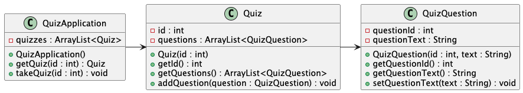
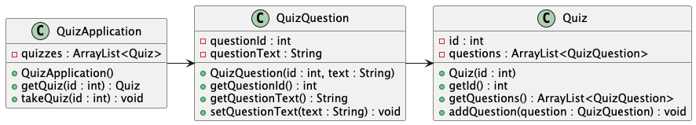
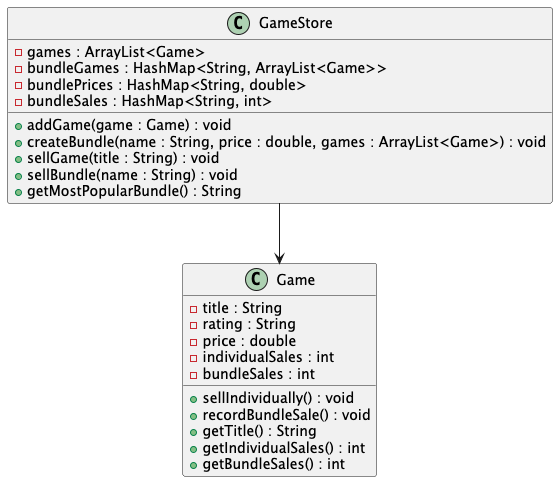
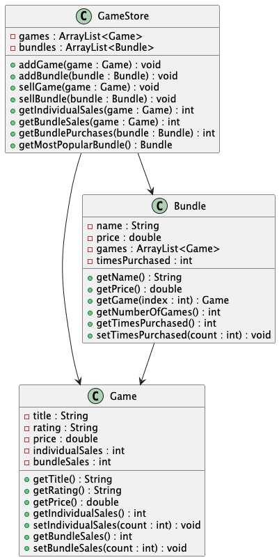
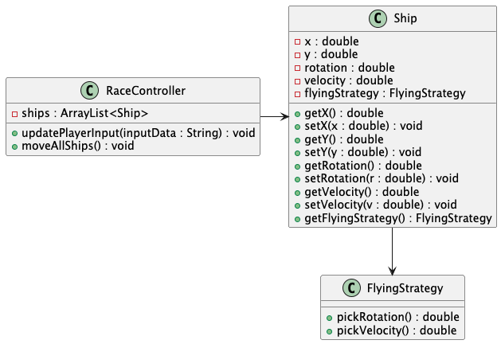
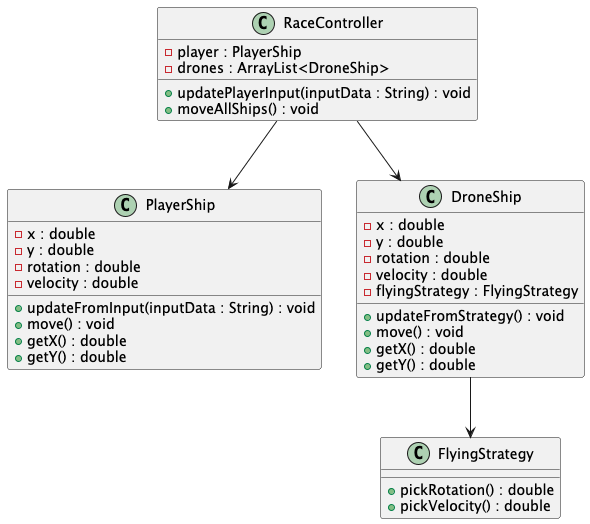
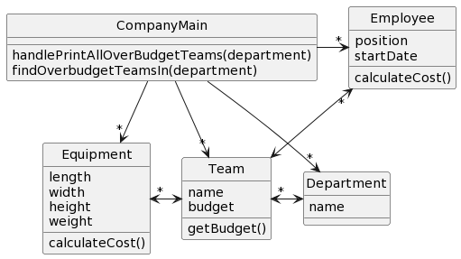
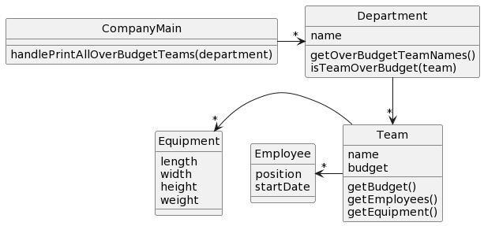
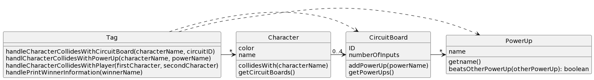
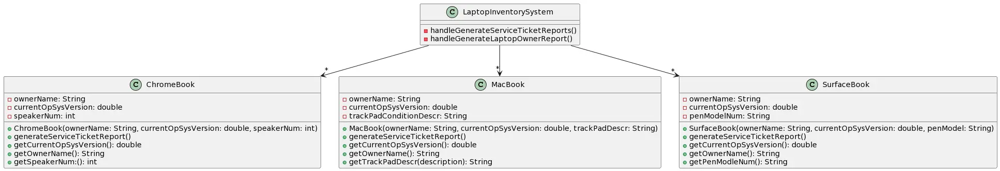

Object Design Hub
Use this page throughout the object design unit to practice turning scenarios into classes, fields, methods, and relationships, and to evaluate alternative UML designs.
OOD Principles Handout
Quick Design Checkdown
Inspect designs in this order and stop at the first major failure:
- Functionality
- Structure around the data
- Distribute responsibilities efficiently (high cohesion)
- Minimize dependencies (low coupling)
- Avoid duplication
📐 UML in IntelliJ — install plugins and use both UML workflows
Install the UML plugins and learn how to create a design diagram or generate UML from Java code.
Install
In IntelliJ: Settings → Plugins → Marketplace
- PlantUML4Idea: creates and renders PlantUML diagrams.
- PlantUML Parser: generates PlantUML from existing Java code.
New should include PlantUML File.
Design → UML
Scenario → Classes + Data + Behavior → UML → Java
Small PlantUML example:
@startuml
class Player {
- name : String
- score : int
+ Player(name : String)
+ addPoints(points : int) : void
+ getScore() : int
}
@enduml
Java → UML
Java → PlantUML Parser → PlantUML → UML Diagram
In IntelliJ, right-click the relevant Java package/source area and run PlantUML Parser to generate PlantUML, then view the diagram with PlantUML4Idea.
Example Problems
The Example Problems DP1/DP2 document includes a set of design problems for you to practice on. Since these are practice problems, you can work on them alone or collaborate with other students.
Solutions with commentary and good designs are provided Solutions Example Problems DP1/DP2. Use these to evaluate your proposed solutions.
If you would like, you can use this template for practicing with these example design problems to prepare your for exam 1 and exam 2.
Design Challenges
Jump to a challenge:
🎮 DP1: Online Quizzes — shared questions and quiz updates
Problem Statement
RoseQuiz is an online quiz system used by instructors and students.
Each quiz has a unique ID and contains several questions. Each question also has its own unique ID and stores the question text.
A question may appear on more than one quiz. For example, Question 17 might appear on both the Week 2 Quiz and the Exam Review Quiz.
An instructor can update the text of a question. Because it is the same question, changing Question 17 should automatically affect every quiz that uses Question 17.
When a student wants to take a quiz, the student provides the quiz ID and the application retrieves that quiz.
Students should inspect the proposed object design and decide whether it correctly represents the required data and relationships.
Part 1 in Gradescope
Identify a list of primary nouns (classes), identify attribute (secondary nouns) for each of these classes, identify methods (verbs)
Part 2 in Gradescope
This design problem includes two intentionally flawed but plausible UML designs. Both designs look reasonable at first glance, but each one violates the same core rule: the same logical question should not be duplicated across multiple quizzes. Updating one copy should not require manually updating every other copy.
Bad Design A
This version is the most direct mistake: each Quiz stores its own list of QuizQuestion objects, and each question copy contains its own questionId and questionText. The same question can appear in multiple quizzes as separate objects.

@startuml
class QuizApplication {
- quizzes : ArrayList<Quiz>
+ QuizApplication()
+ getQuiz(id : int) : Quiz
+ takeQuiz(id : int) : void
}
class Quiz {
- id : int
- questions : ArrayList<QuizQuestion>
+ Quiz(id : int)
+ getId() : int
+ getQuestions() : ArrayList<QuizQuestion>
+ addQuestion(question : QuizQuestion) : void
}
class QuizQuestion {
- questionId : int
- questionText : String
+ QuizQuestion(id : int, text : String)
+ getQuestionId() : int
+ getQuestionText() : String
+ setQuestionText(text : String) : void
}
QuizApplication --> Quiz
Quiz --> QuizQuestion
@enduml
Bad Design B
This version looks organized but is still wrong: the application points directly to QuizQuestion, and QuizQuestion points back to the Quiz. The relationship is reversed from a shared-question design and still gives each question a strong quiz-specific dependency instead of a single shared object that multiple quizzes can reference.

@startuml
class QuizApplication {
- quizzes : ArrayList<Quiz>
+ QuizApplication()
+ getQuiz(id : int) : Quiz
+ takeQuiz(id : int) : void
}
class QuizQuestion {
- questionId : int
- questionText : String
+ QuizQuestion(id : int, text : String)
+ getQuestionId() : int
+ getQuestionText() : String
+ setQuestionText(text : String) : void
}
class Quiz {
- id : int
+ Quiz(id : int)
+ getId() : int
}
QuizApplication -right-> QuizQuestion
QuizQuestion -right-> Quiz
@enduml
- No constructors in UML: You don’t need to list constructors in your class diagrams. We’ll add them later when coding.
- Object fields via arrows: Object fields and relationships: When a class stores another object, show the relationship with an association arrow. While learning UML, we may also show the object field inside the class box to make the Java-to-UML connection explicit.
- Focus on Design Principle #1: For this first design problem, just aim to make the system functional. Don’t overcomplicate.
- No extra methods: For now, don’t add new methods—>stick to the basics given in the problem.
- Actors/Users (like Teacher or Student) are not part of this quiz application. For this assignment we’re modeling the data and behaviors of the quiz system itself (questions, quizzes), not the login/permissions layer or user profiles.
🛍️ DP2: Vapor Sales — games, bundles, and revenue reporting
Problem Statement
Vapor, the popular video game digital store, has hired you as a consultant to design a sales management application. Each game available to purchase through Vapor has a title, ESRB rating (e.g., "T" for "Teen"), and price, all of which are fixed. You may assume game titles are unique.
Vapor also sells game bundles, which complicates their sales records (hence why they hired you instead of designing the application themselves). Each bundle is a set of games with a clever name (e.g., "Boom Bundle 2") and price (less than the sum of the individual game prices) determined in advance by the marketing team. Every bundle contains at least two games, and a game may appear in more than one bundle. You may assume bundle names are unique.
For any given bundle, Vapor wants to be able to generate a report including the bundle's name, price, included game titles, how many times the bundle was purchased, and the total revenue from that bundle.
Also, Vapor wants to be able to produce a sales report for each game, including how many times the game has been sold individually or as part of a bundle (e.g., "TeamCastle has sold 27 copies individually and 44 copies as part of a bundle").
The game's sales report should also include the total revenue from that game. For computing total revenue, Vapor distributes the sales price of each bundle evenly across all games in the bundle. For example, a bundle of four games sold for $60 should count as $15 of revenue for each game.
Finally, Vapor wants a method to determine the game with the highest total revenue and a method to determine the most popular (i.e., most copies sold) bundle.
Part 1 in Gradescope
Identify a list of primary nouns (classes), identify attribute (secondary nouns) for each of these classes, identify methods (verbs)
Part 2 in Gradescope
Bad Design A

Bad Design B

🚀 DP3: Spaceships — player control and AI ship movement
Problem Statement
In a single-player spaceship racing game, the mechanics surrounding ships are particularly important. Each ship has its own current position, rotation, and velocity. The game consists of a single-player ship, controlled by the player, and several "enemy" ships controlled by AI. Rotation and velocity can be increased or decreased to steer any ship.
- Enemy Ships: AI-controlled ships are steered using a single AI strategy that depends on a flying strategy. This strategy (which could be different for each enemy ship) sets the rotation and velocity at regular intervals (e.g., every 10ms).
- Player Ship: The ship controlled by the player gets its rotation and velocity input from the player's controller.
There are two commands to consider:
updatePlayerInput(inputData): Called when a player presses a key on the controller.moveAllShips(): First asks the enemy/AI ships to update their rotation and velocity, then updates the position of all ships in the game based on their current settings.
Bad Design A

Bad Design B

💼 DP4: Team Budget — departments, teams, people, and equipment costs
Problem Statement
Review Example Problems DP3-5 with a set of design problems for you to practice on. Solutions with commentary and good designs are provided Solutions Example Problems DP1/DP2. Use these to evaluate your proposed solutions.
At a particular company, departments are composed of named teams and each team has a yearly budget. Teams have both employees and equipment, each of which have a calculated yearly cost. Employees consist of a position and a start date, and their cost is calculated based on their position and how long they have been in the company. Equipment consists of dimensions (length, width and height) and weight, which are used to calculate the cost of the equipment due to storage. A team is over budget if the total yearly cost of all employees and equipment is greater than the team's budget. It should be possible to print a list of all teams within a department that are over budget.
Bad Design A

Bad Design B

🏷️ DP5: Tag — circuit boards, power-ups, and collision outcomes
Problem Statement
We are designing a portion of a multiplayer tag game with some interesting features. There are characters and each character is designated a rendering color (blue, red, etc.) and a name. Characters may collide with circuit boards that may be collected (max of 4) and each circuit board has an ID and a total number of ports (ports are used to store power-ups) on each board. Circuit boards carry power-ups, one per port. Characters can also collide with power-ups on the playing surface, and if there is an open port on any circuit board, the power-up can be attached to a board. Once the ports are filled, no more power-ups may be added nor any discarded. When characters collide, their power-up combinations determine who "tagged" whom. For simplicity, think of a complex "Paper, Rock, Scissors" type set of rules (or "Paper, Rock, Scissors, Lizard, Spock" if you're a Big Bang Theory fan) for all the power-ups — each power-up, or set therein, can beat some and lose to others. The set of rules for the power-ups are an implementation detail that is not important to our design, we simply need the names of the power-ups of each character to determine which character "won" the tag. Also, for simplicity, assume we only need to track the characters, circuit boards and power-ups (each with pertinent data); we will not worry about the rendering/drawing parts of the design or the playing surface (which could be 2D or 3D) or even the movement of the characters. When characters collide, the winner name should be printed along with all the names of the winner's power-ups.
Bad Design

💻 DP6: Inventory — serviced laptops, owners, and device-specific extras
Problem Statement
EIT needs to keep inventory of the laptops from various professors that are currently being serviced by EIT. It is important for EIT to know the current OS version installed so that it can be updated while being serviced, if necessary. Also, EIT must track the laptop's owner. Each device comes with an extra as follows:
- SurfaceBook owners get a pen, for which we track the pen's model number.
- MacBook owners get a trackpad and the condition of the trackpad should be tracked.
- ChromeBook owners get an unlimited number of speakers to use with the Chromebook and the number must be tracked.
At the end of each workday the manager of EIT wants two different reports generated:
- A service ticket report that lists each laptop being serviced and includes: the laptop type (e.g., MacBook, Surface, etc.), its OS version, and its owner.
- A laptop owner report that just lists all the owners of laptops currently being serviced by EIT with their respective extra device information.
Bad Design

Turn-In Instructions
Work on each problem (use template as needed), create UML diagrams, complete questions on GradeScope and submit your diagrams. You will complete these design problems via GradeScope, which is linked from Moodle.
Grading
Assignment Parts and Points
Details on the specific parts and point values are provided in GradeScope.
Defective Solutions and Your Response
- When identifying the problems in a defective solution, you must clearly explain why a design principle is violated.
- You should identify the main flaw in each defective design. While multiple flaws may exist, there is usually one primary issue.
- Within individual problems, to earn full credit, identify the single main problem in each flawed design.
Your Solution
- Your final solution must address the issues you have identified and propose a design that is better than the problematic solutions.
- To earn full credit, your design must improve at least one of the two bad solutions.
- If your design is no better or is worse than the provided solutions, you will not earn full credit.
Detailed Design Principles Reference
Full page reference: CSSE220 OOP Design Principles | Handout: Basic OO Principles for CSSE220
Use this checklist in order and stop at the first big failure.
Main Focus and Sequence (how to check principles in order)
- Principle #1: Functionality (can it work at all?)
- Principle #2: Structure around data (nouns → classes, encapsulation)
- Principle #3: Distribute responsibility efficiently (high cohesion)
- Principle #4: Minimize dependencies (low coupling: tell-don't-ask, avoid chains)
- Principle #5: Avoid duplication (DRY - don't repeat yourself)
1️⃣ Functionality: Does the design support the required functionality?
What this principle is asking: "Could this system technically meet the requirements?"
(Not "is it elegant?" Not "is it good OO?" Just: can it work?)
Guiding questions:
- Is all required data represented somewhere in the design?
- Are all required relationships possible (1-1, 1-many, many-many)?
- Can all required operations be implemented without changing the requirements?
- Even if messy, could it run and produce correct results?
No ❌ → broken design (everything after is basically irrelevant).
2️⃣ Structure around the data (Encapsulation): Is the design built from the problem nouns?
What this principle is asking: "Did you model the real things in the problem, and do they own their behavior?"
Guiding questions:
- 2a (Nouns → classes): What are the key nouns in the prompt? Are they represented as classes?
- 2b (Intelligent behavior): Does each class have intelligent behavior that operates on its own data?
- 2b (Data class check): Are you avoiding data classes (only fields + getters/setters, no real behavior)?
- 2b (Ownership of decisions): When you see a domain question, does the answer live in the class that owns the data?
3️⃣ Distribute responsibility efficiently (High Cohesion): Is the workload split cleanly?
What this principle is asking: "Does each class have one main job, or is one class doing everything?"
Guiding questions:
- 3a: Is any class getting too large or doing too much?
- 3b: Does each class have a single responsibility (high cohesion)?
- Would one requirement change force edits in many unrelated methods in the same class?
4️⃣ Minimize dependencies (Low Coupling): Are objects "telling" instead of "asking"?
What this principle is asking: "Are classes too entangled? Are you reaching through objects to get work done?"
Guiding questions:
- 4a (Tell, Don't Ask): Are you pulling data out with getters and making decisions elsewhere?
- Could you replace "ask for internals + compute" with a single message like
team.isOverBudget()? - 4b (Message chains): Do you have chains like
a.getB().getC().doThing()? - Does one class need deep knowledge of another class's internal structure?
5️⃣ Avoid duplication: Is code duplicated?
What this principle is asking: "Will you copy-paste the same logic in multiple places?"
Guiding questions:
- Are the same logic patterns likely to be copy-pasted across multiple classes or methods?
- If you fixed a bug in one place, would you need to fix it again elsewhere?
- Are multiple classes implementing nearly identical behavior?
- Could shared logic be pulled into a helper method, common interface, or superclass?